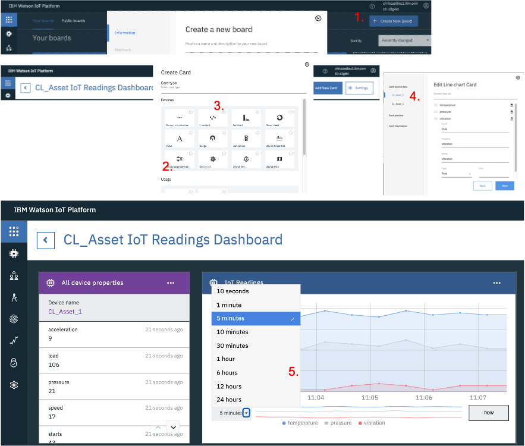
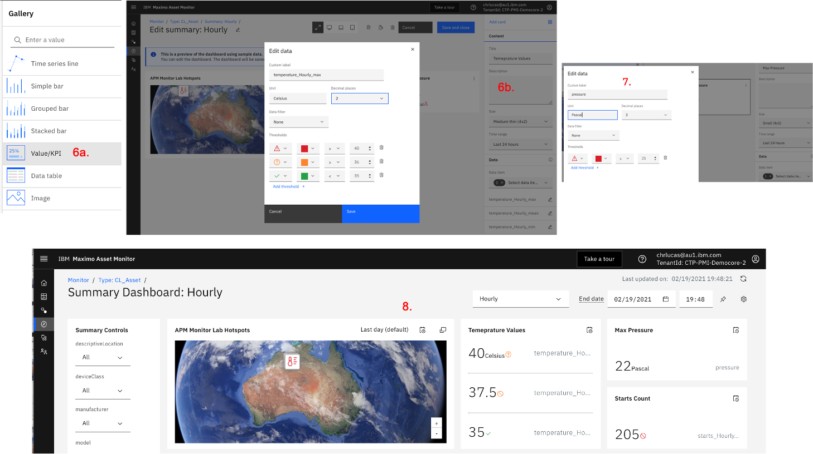
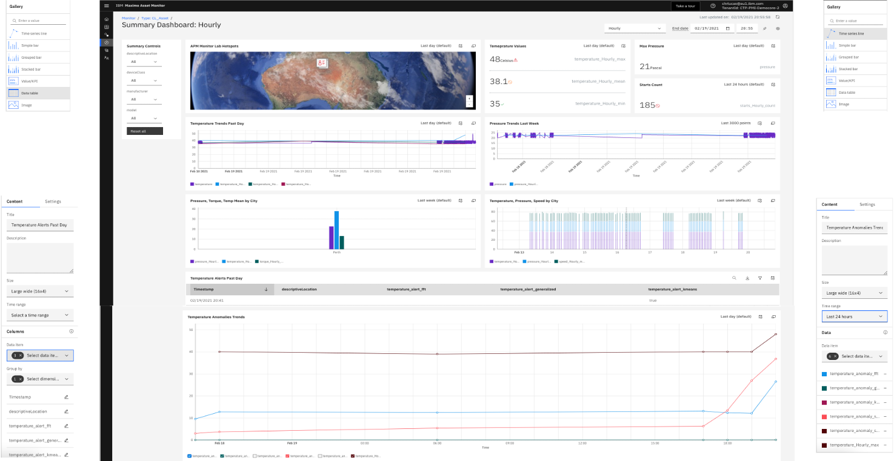

[Page last updated on 10 January 2022]
MONITOR Lab
Attention
January 2022 Note
This Lab was built in H1 2021 on a MONITOR instance part of a MAS 8.3 (Maximo Application Suite) installation. Since then, MAS and MONITOR have moved to version 8.6 (and should soon be at 8.7), with many changes vs. 8.3, so some screens in this Lab have changed - although the 'overall logic' remains valid.
I will NOT update this Lab to MAS 8.6.
Rather, I encourage you to follow this brand NEW MONITOR Lab (for MAS 8.6) Discover MONITOR with Pattern Files, where you will discover pattern files using MAS Cloud Pak for Data, create Jupyter Notebooks to send the data to MONITOR, and more ...
Disclaimer
This Lab is provided as-is and does NOT represent formal IBM documentation in any way. Please send any feedback directly to Christophe Lucas.
Before you begin: Log into your Monitor instance using your IBM ID and the environment details provided by the instructor.
0. Objectives
In this Module you will:
- Generate the IoT data that will be used throughout the labs:
- Create a Device Type and 3 Devices of that Type
- Generate IoT data for those 3 Devices using an IoT simulation
- Create Physical & Logical interfaces to send the IoT data to the Monitor data lake
- Visualise the IoT data in a Watson IoT Platform simple dashboard
- Monitor that data, detect anomalies, create alerts and dashboards:
- Verify that the IoT data made it to the Monitor data lake
- Create a simple dashboard displaying the IoT data
- Create anomalous IoT readings during a short period of time and create anomaly detection functions that will pick them up
- [OPTIONAL] be directed to another deep-dive lab to understand the ins and outs of Anomaly Detection
- Create Alerts based on the anomaly scores
- Understand how to create advanced dashboards
1. Generate IoT data
1. Create Device Type & 3 Devices
Let's first create a Device Type.
- From your Monitor Instance Home page, click
Connect Devices - On the opened Connect menu, click
Open Platform Service applicationin the top-right corner. This will launch the associated Watson IoT Platform in a separate browser tab. - Go to the Device Types menu, and click
Add Device Type. - Enter
XY_Assetin the Name and Description fields - whereXYare your initials. Note that for the rest of this lab, we will useCL_Asset(e.g. CL for Christophe Lucas). ClickNext. - On the next Metadata page, enter
CLin Model and Manufacturer fields, and enterCL_Assetin Device Class field. The reason why we want to enter values here is to later show how Dimensions can be used in Monitor to slide and dice the data. ClickFinish.

Now, let's create 3 Devices of type CL_Asset.
- Stay in the Watson IoT Platform, go to the Browse menu and click
Add Device. - On the identity page, select your just-created
CL_Assetas Entity Type and enterCL_Asset_1in Device ID. ClickNext. - On the Device Information page, accept the defaults, click
Next. - On the Security page, accept the defaults, click
Next. - On the Summary page, accept the defaults, click
Finish. - Click
Back, and repeat above steps 1. to 5. for 2 more Assets:CL_Asset_2andCL_Asset_3. - Finally, go to the
Browsemenu, enterCL_Assetin the Search field, and you will now see your 3 Devices.
You have now created the required CL_Asset Device Type and the 3 CL_Asset_1, CL_Asset_2 and CL_Asset_3 Devices that we will use throughout the labs.

2. Create IoT Simulation
Let's now send data to those 3 Devices !
Using the Watson IoT Platform IoT Simulation capabilities,
it is possible to simulate a device and its IoT readings - exactly as if it was a real IoT device really connected to the platform and sending real IoT readings.
We are going to use this great functionality as it allows one to literally simulate any asset (e.g. Pump, Engine, Truck, Conveyor Belt - you name it !), any IoT readings and do any demo.
For this Lab, we will simulate our 3 CL_Asset_1_2_3 Devices generating the following IoT readings: temperature, vibration, pressure, speed, acceleration, load, torque, starts . You can of course change the IoT reading names and/or their values to fit your demo needs.
- First of all, make sure that in your Watson IoT Platform, Settings menu, the
Activate Device Simulatoris ON. Once that is done, you will see a little box in bottom-right of your screen showing 0 Simulation. - Click on that
0 Simulationbottom-right box, and clickCreate Simulation. - In the Select or create a device type box, select the
CL_Assetdevice type you earlier created. That will open a window as you can see in picture below. - In Event type name, enter
CLA. in the Schedule field, enter4 Every Minute. In the Payload field, copy-paste the following .json code. Make sure at this stage that theStore events in the data lakebox remains unchecked ! ClickSave. - Click
Use Registered Device, enterCL_Assetin the Pick Device box, selectCL_Asset_1. Repeat for CL_Asset_2 and CL_Asset_3. - You should now start seeing Events flowing in the bottom Events box.
Note that the values in the random(35,40) functions can be considered being the 'standard operating conditions' for the given IoT reading.
Later on in the lab, we will change those value ranges for short periods of time (i.e. change the temperature ranges from random(35,40) to random(46,49)) and show how Monitor's out-of-the-box anomaly functions can automatically spot these 'anomalies' which are deviations from the 'standard operating conditions'.
{
"temperature": random(35,40),
"vibration": random(1,5),
"pressure": random(20,25),
"speed": random(15,20),
"acceleration": random(8,10),
"load": random(90,110),
"torque": random(12,14),
"starts": increment(1,1)
}

Great, you now have your 3 CL_Asset_1_2_3 Devices generating IoT readings 4 times every minute.
Let's check those readings on a Dashboard.
3. Create Watson IoT Platform Dashboard
Let's create a Dashboard so we can see the simulated IoT readings for 1 of our devices: CL_Asset_1.
This Dashboard will allow us to clearly visualise the anomalies earlier mentioned.
- Still in the Watson IoT Platform, click on the Boards menu. Click
Create New Board. Name the BoardCL_Asset IoT Readings Dashobard. ClickNextthenSubmit. Open the Board. - Let's first create a small card which displays the 8 IoT Readings we simulated, getting updated every 15 seconds. Click
Add New Card. SelectAll device propertiesthenCL_Asset_1, thenNextthenSubmit. - Let's now create a card which shows the flow of data. Click
Add New Card. ClickLine Chart, then selectCL_Asset_1. - Click
Connect data set. In the event field, selectCLA(that is the name of the IoT Simulation we created earlier), then in the Property selecttemperature. Repeat this for a couple more properties, e.g.vibrationandpressure. ClickNext, select theXLsize, clickNextthenSubmit. - Drag and drop the second card next to the first one. Play with the
5 minutesto24 hoursviews.

4. Create Physical & Logical Interfaces
So far, we have only generated simulated IoT data. What Monitor uses for all its visualisations and calculations is the data from the data lake. Monitor's data lake is being populated through the use of Physical & Logical interfaces. Let's create those interfaces and populate that data lake !
First let's create the Physical Interface.
- Still in the Watson IoT Platform, go to the Device Types menu, search then select CL_Asset, then click on the Interface menu.
- Click
Create Physical Interface. Leave the default name CL_Asset_PI, clickNext. - Click
Create event type. Wait 15 seconds or clickUse Last Event Cacheand you will see the CLA (which corresponds to the IoT Simulation we earlier created) event appear. - Click that event, click
Add. CickDone.
Let's now create the Logical Interface.
- Click
Create Logical Interface. Leave the default name CL_Asset_LI, clickNext. - Click
Add Property,Selectthetemperature, clickSave. Repeat this for the 7 other IoT readings. - Make sure you tick the
Allow Additional PropertiesON, as that would allow you to add more readings in the future if you wish. - Click
Next, clickno event notificationsand change it toAll events. - Click
Apply, thenDone. - Click
Activatetwice.

5. Take a break and let some magic happen ...
Brilliant ! You have created all that is needed to start monitoring your own IoT data. In the next module, we will check that your data lake is now populated. But first take a break (count 15 minutes at least, but I recommend several hours as all the following reports will show more data), because:
- some background job needs to run to populate your data lake with your IoT data, via the logical interface you just created.
- it is good for the IoT Simulation to keep running a bit, so the visualisations that we will build in next module will show data for more than just 1 hour. Also, for Anomaly functions to detect anomalies, 'normal conditions' must first occur
2. Monitor IoT data
1. Check your IoT data made it to the Monitor data lake
- Back to the Monitor interface, click
Monitor Entities. If you see 3 inNumber of Entities, it means that your data did make it to the data lake. Let's have a look around. - Click on
CL_Asset. Then click onCL_Asset_1, then on itsMetricstab. Play with the 'slider' on e.g.acceleration- you can see your data now. - Go back to the
CL_Assetmain page, and click theDatatab. See all your (raw) IoT Metrics & Dimensions. Note that at this stage it is normal to see only a couple points on the graph as we have only been generating data for so long ! Play with the top 'slider' here too.

2. Create an Hourly Summary Dashboard
- Back to the
CL_Assetmain page, clickNew Summary. - Enter
Hourlyas your Dashboard title, selectHourlyTime grain, click all Dimensions. ClickNext. - Click all
Data Item, and for just 1 reading e.g.temperature, select allMethodsi.e.max,min,mean,stdetc. ClickConfigure Dashboard. - Click
Configure Dashboard. The next page shows an overview of what the Dashboard will look like. ClickCreate. Note that it will take a couple minutes for your Hourly dashboard to be ready, and you will note a Preparing icon during that time.
Once it is ready, your dashboard should look like this
(with possibly less data points depending on how fast you have been to get here and for how long data has been sent).
Notice the hourly grain of the cards (vs. the shorter time grain that you just saw on the CL_Asset_1 Metrics tab).
On the left side in Summary Controls, notice the so-called Dimensions that correspond to the Metadata we associated to the CL_Asset Device Type and 3 Devices when we created them in the Watson IoT Platform.
Notice how you can change the 'time scope' of each card.
Also notice how you can view each card in 'full screen' mode, and further focus on a time period with the top slider-bar.
Finally, also notice how the temperature card displays the max, min, mean etc that we defined via the Methods and how you can click on 1 or several of these.
3. Explore the Data
- Back to the
CL_Assetmain page, click on theDatatab. Observe that new Data Items have appeared, i.e. under theMetric (Calculated)section. Notice that for all the IoT Readings, a newreading_Hourly_meancalculated metric was created - this was automatically done when we crated the hourly dashboard in previous step. - In the filer just below Data Item, start writing temp. This filters the data items displayed.
Note that for the temperature reading, on top of the mean data item,
temperature_Hourly_min,temperature_Hourly_max,temperature_Hourly_stdetc were also created - that is because of the 8 Methods that we earlier selected for that data item when creating the dashboard.
4. Create new Data Items
On top of those automatically generated calculated metric, it is of course possible to create a vast range of new calculated metric. In the following exercise, we will:
- (a - step 1 to 3) create an hourly count of the number of starts using the
Countfunction, - (b - step 4) use a simple
PythonExpressionfunction to create temperature readings in Fahrenheit vs. Celsius, - (c - step 5 to 6) use the
Entity FilterandFilterfunctions to retrieve data for only 1 of our Devices (vs. for all Devices of the CL_Asset Device Type).
Let's go:
- On the
Datatab, click the+icon, select theCountfunction, clickNext. - On the first screen, select
startsas the data source, enter1(default value) in min_output. ClickNext. SelectHourlyin the Granularity, untick theAuto Scheduleand enter5in Executing query and2in Calculating last fields. In the Output metric field, enterstarts_Hourly_count. ClickCreate. NOTE: as always, naming convention is important. As the amount of your data items will grow, you want to use a consistent naming convention that will e.g. facilitate your data viewing capabilities by making filtering easy and straightforward. -
You will now see the new data item appear in your Metrics (calculated) menu. Wait for 5 minutes for results to appear.

-
On the
Datatab, click the+icon, select thePythonExpressionfunction, clickNext. In the expression field, type this:df['temperature'] * 1.8 + 32- note this is a very simple Python expression using pandas syntax, for more info, see: Built-in functions and Using Expressions. Name the Output metric fieldtemperature_farhenheit. Set theScheduleas we did in step 3., wait 5 minutes. Watch the newly createdtemperature_farhenheitdata item.
-
This is a 2-steps process. Firstly, on the
Datatab, click the+icon, select theEntityFilterfunction, clickNext. In the entity_list section, enterCL_Asset_1. ClickNext, name the Output metric fieldCL_Asset_1. Set theScheduleas we did in step 3., wait 5 minutes. InMetrics (calculated), search for then watchCL_Asset_1. -
Secondly, we will use this filter and apply it to the temperature IoT reading. On the
Datatab, click the+icon, select theFilterfunction, clickNext. In the sources section, select the just createdCL_Asset_1data item. In the expression field, type${CL_Asset_1} == True. In the filtered_sources field, selecttemperature. ClickNext. Set theScheduleas we did in step 3. Name the Output metric fieldtemperature_CL_Asset_1. Wait 5 minutes. Watch the newly created data item which now displays the temperature values for CL_Asset_1 only !
5. Create some anomalous IoT Readings
Remember 2. Create IoT Simulation ?
In that IoT simulation (which should have been running for some time now), we defined random ranges of values
for each IoT reading, e.g. "temperature": random(35,40).
In this section, we are going to change that range during a couple minutes to simulate a sudden and temporary surge in temperature.
That will enable us to demonstrate in 7. Create Anomaly Detection functions on your IoT data
section that Monitor's out-of-the-box Anomaly Detection functions do actually spot that anomalous 'spike in temperature'.
- Back to the Watson IoT Platform, click the IoT Simulation box in bottom-right corner.
Change the values of
"temperature": random(35,40)line to"temperature": random(46,48), clickSave. Take note of the time on your watch. Let the updated simulation run for 3 to 4 minutes. After 3 to 4 minutes, set the"temperature": random(46,48)back to"temperature": random(35,40), clickSave. - the 'anomaly' we just created is visible on the Dashboard (10 minutes, 1 hour, 6 hours, 12 hours views), i.e. we clearly see a temporary surge in the temperature readings in the top-right of the screen.
NOTE: take note of the date and time when you generated those anomalous IoT readings. As you can see in below picture, the anomalous readings for these labs were created on 30 November 2020, around 04:50 PM.
6. [OPTIONAL] Understand Monitor's Anomaly Detection capabilities
Although this section is optional, it is highly recommended. This is a full Lab on itself, and plan 2 to 3 hours to complete it. You can access it here: Monitor Anomalies.
In this great deep-dive lab, you will:
- View 3 great short Youtube movies explaining all the ins and outs of Anomaly Detection.
- Create simulated
Robotsthat Monitor enables you to easily create and that come with all the required data needed to understand and play with Anomaly Detection. - Understand the distinction between Summary & Instance dashboards and create both.
- Understand how to create Metric Line Cards and display Anomaly Detections on them.
- Create and display Alerts and display them ... and so much more !
7. Create Anomaly Detection functions on your IoT data
In this section, we are going to create 5 Anomaly models and see if they detect the temperature anomalous IoT readings we generated in 5. Create some anomalous IoT Readings section.
- On the
Datatab, click the+icon, enterAnomalyin the Search box and have a look at all out Monitor's available models. Click theFFTbasedGeneralizedAnomalyScoreone. ClickNext. - Select the
Apply to all entities of the selected typescope. ClickNext. - Select the
temperatureas input item and leave the default windowsize to12. ClickNext. - Set the Schedule as in previous section, and name the Output metric field
temperature_anomaly_fft. - Wait 5 minutes, and now watch the
temperature_anomaly_fftgraph. Do notice how a sudden peak of the anomaly score is observed on the 04:00 PM line ... remember 04:50 PM on November 2020 ! This confirms that this FFT model did perfectly pick up the anomaloustemperatureIoT readings we generated. - Repeat steps 5 to 6 (keep all the defaults) for the following anomaly detection functions:
GeneralizedAnomalyScore,KMeansAnomalyScore,SaliencybasedGeneralizedAnomalyScore,SpectralAnomalyScore. Respecting the naming conventions, name your associated data itemstemperature_anomaly_generalized,temperature_anomaly_kmeans,temperature_anomaly_saliency,temperature_anomaly_spectralrespectively. Open the correspondingMetric (calculated)data item and notice how all 5 Anomaly functions perfectly spotted the November 2020, 04:50 PM anomalies, i.e. display a sudden peak in their score at that time !
NOTE: the anomalies we earlier generated are very obvious - on purpose for this demo -,
i.e. during just a couple minutes (around 04:50 PM), we generated temperature readings ranging from 46 to 48,
whereas our IoT Simulation generated readings ranging from 35 to 40 for most of the time.
No surprise then that all the 5 Anomaly models that we created spotted those obvious anomalies.
However, be aware that those Monitor's out-of-the-box anomaly models can detect much more than those obvious anomalies !
You can find more information on those models here:
Unsupervised anomaly detectors
and Supervised anomaly detectors.
This picture gives a very quick overview of the main types of anomalies that Monitor can detect and which models are available.

8. Create Alerts based on Anomaly scores
As you just learned, Monitor's Anomaly Detection functions can easily spot anomalies and be viewed on a graph where the X-axis is Time
and the Y-axis is an Anomaly Score.
Each function returns a different score range (that is inherent to each model essence).
What we are typically interested in our 'Anomaly Detection' work is to spot peaks in those scores, which correspond to the most likely anomalous readings we want to be alerted of.
This is where Monitor's Alerts come into play.
Alerts can be automatically generated in Monitor when one (any) of the Metrics of Monitor go above or below a certain value.
In this exercise, we will generate Alerts based on the temperature_anomaly_* metrics we created in the previous section.
The whole idea is that we want to be alerted when a serious anomaly occurs, but we do NOT want to be over alerted and drown into a so-called 'alert storm'. Also, what we want to avoid is generating way too many alerts into the system which would just 'pollute the database' with thousands of irrelevant and meaningless rows ! Because Anomaly Scores are something dynamic, it is key that we look at those score values first before creating alerts based on them.
So first of all, let's have a detailed look at your anomaly scores.
Let's focus just on temperature_anomaly_generalized, temperature_anomaly_kmeans and temperature_anomaly_fft in this exercise.
Although your scores might be slightly different, what you should note is that, whereas the (max values of the) anomaly scores remained consistently
low most of the time that our IoT Simulation was running (i.e. "temperature": random(35,40)),
we can observe a clear spike for each of those scores corresponding to the November 20, 04:50 PM surge (i.e. "temperature": random(46,48)).
The picture and table below give an idea of those scores.
This should give us a good-enough idea of where to start with our alerts ...
| Anomaly Data Item | Normal Condition Score | Anomalous Condition Score |
|---|---|---|
temperature_anomaly_generalized |
<<0.200 | >1.5 |
temperature_anomaly_kmeans |
<<10 | >30 |
temperature_anomaly_fft |
<<100 | >450 |

- On the
Datatab, click the+icon, selectAlertHighValue. Selecttemperature_anomaly_kmeansas input_item, enter30as the upper_threshold, selectMediumin Severity andNewin Status. ClickNext, set theScheduleand name ittemperature_alert_kmeans. - Repeat above step for
temperature_alert_generalized(input_item =temperature_anomaly_generalized, upper_threshold =1.5, Severity =High, Status =Validated), andtemperature_alert_fft(input_item =temperature_anomaly_fft, upper_threshold =450, Severity =Low, Status =Acknowledged). - Let's now have a look at the number of Alerts we generated. First notice that the newly created Alerts appear as
another data item in the Alert (calculated) section. Click on e.g.
temperature_alert_kmeans. NOTE: it might be that you see nothing on the graph and on the table under it, e.g. that might be the case if your IoT reading anomalies were generated yesterday. That is normal, because the default time range of those graphs is 1 day. On the table below the graph, clickLast Week(vs. the default). See that fortemperature_alert_kmeans, 4 Alerts were generated. - Under the column Entity ID, click
CL_Asset_1, this will open a new window. ClickEvents, clickLast Week(vs. the default), and you will see that we generated about 10 Alerts for CL_Asset_1 - that is a reasonable number, we are not going to overflow the system !
9. Update your Summary Dashboard
In this final 'Monitor Lab' section, we are going to bring everything together and show how you can create and customise dashboards to - literally - visualise whatever you want from all the data we generated so far.
-
Open the CL_Asset Hourly dashboard. Top-right, click
Edit Dashboard. That will open the Dashboard visual editor where we can see the default cards that we created in the 2. Create an Hourly Summary Dashboard section. Notice you can drag and drop the cards around on the dashboard. Notice the types of cards that can be created in the Gallery - Time Series, Bar charts, Images etc. -
Let's delete all the cards, and re-create a Dashboard from scratch. On the top right of each card, click
Delete. -
Let's first create an Image card on which we will then display hotspots. Download this image Image and save it as
CL_Asset.jpgon your computer. ClickImagein the Gallery and drag-drop theCL_Asset.jpgon the card. Then clickAdd from galleryand select the image. -
Make the card
SizeMedium (8x2), select Last 24 hours inTime Range. InSettings, click Fill inImage display options. -
In the Gallery, click
Edit Image. On theHotspotstab, click Temperature and Vibration inX coordinateandY coordinateboxes. Then click the blue spot that appeared on the map. On theTooltiptab, enter This is a hotspot and select the Temperature icon and color. On theData Sourcetab, select e.g. the data items as per picture below. ClickSave. -
We'll now create a Value/KPI Card. Click
Value/KPI Cardin the Gallery. Enter Temperature Values in theTitle. ClickMedium thin (4x2)as Size and selecttemperature_Hourly_max,temperature_Hourly_meanandtemperature_Hourly_minin the Data Section. For those 3 data items, click edit, enter 2 in Decimal Places, Celsius in Unit and add thresholds as per picture below. ClickSave. -
Click
Value/KPI Cardin the Gallery. Create a card calledMax Pressurecard, with pressure and sizeSmall (4x1), and define a simple Threshold as in step 6. -
Repeat 7. for
Starts Count. ClickSave and Closeand view the Dashboard.  -
Create 2 new Time series line cards as per picture below.
-
Create a Grouped bar (called Pressure, Torque, Temp Mean by City) and a Stacked Bar (called Temperature, Pressure, Speed by City) as per pictures below. NOTE: due to a little issue (solved in next release), make sure you add a
"aggregator": "mean"line after each attribute via the Open JSON editor. -
Finally, let's create a Data table card that displays Alerts, and a Time series line that displays the Max Temperature readings and all their Anomalies trends. Your final dashboard should look like this: 
{kind=link}
Congratulations, you made it - hope you enjoyed this lab !